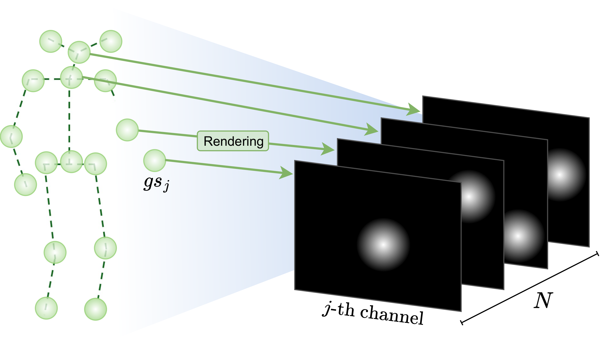

Overview
Accurate 3D human pose estimation is fundamental for applications such as augmented reality and human-robot interaction. State-of-the-art multi-view methods learn to fuse predictions across views by training on large annotated datasets, leading to poor generalization when the test scenario differs. To overcome these limitations, we propose SkelSplat, a novel framework for multi-view 3D human pose estimation based on differentiable Gaussian rendering. Human pose is modeled as a skeleton of 3D Gaussians, one per joint, optimized via differentiable rendering to enable seamless fusion of arbitrary camera views without 3D ground-truth supervision. Since Gaussian Splatting was originally designed for dense scene reconstruction, we propose a novel one-hot encoding scheme that enables independent optimization of human joints. SkelSplat outperforms approaches that do not rely on 3D ground truth in Human3.6M and CMU, while reducing the cross-dataset error up to 47.8% compared to learning-based methods. Experiments on Human3.6M-Occ and Occlusion-Person demonstrate robustness to occlusions, without scenario-specific fine-tuning.
SkelSplat
SkelSplat leverages the Gaussian Splatting representation to model each human joint as a 3D Gaussian. Given an initial 3D pose guess and 2D predictions from multiple cameras, SkelSplat constructs a Gaussian representation by building an anisotropic Gaussian for each body joint. Pseudo-ground truth heatmaps are generated from the 2D detections and used to supervise the optimization, which refines the Gaussians by minimizing a differentiable loss between heatmaps and Gaussian renderings.

Joint Encoding
 We tailor the rendering function to human pose estimation by introducing a one-hot encoding scheme for joints. We modify the RGB-based appearance encoding with a joint identity encoding that activates only the j-th channel for the j-th joint Gaussian. This identity vector is encoded using degree-zero spherical harmonics coefficients, repurposing the appearance field to represent joint identity rather than color. We modify also the rendering function accordingly, to produce a N-channel tensor, where each channel corresponds to the splat of a single joint Gaussian on a camera view. This allows independent supervision of each Gaussian, even when multiple 2D joint detections are overlapping in the image plane.
Optimization
The optimization refines the parameters of each joint Gaussian by minimizing a loss between the rendered splats and the pseudo-ground truth heatmaps. We employ a combination of a L2 loss, which encourages the rendered splats to align with the 2D detections, and a 3D bone length consistency loss, which enforces that regular lengths of symmetric limbs, such as arms or legs, to encourage the recovered 3D structure to be anatomically coherent. The optimization is performed using gradient descent, leveraging the differentiable nature of the rendering process to backpropagate errors from the 2D image space to the 3D Gaussian parameters.
Video
BibTeX
@article{bragagnolo2025skelsplat,
title={SkelSplat: Robust Multi-view 3D Human Pose Estimation with Differentiable Gaussian Rendering},
author={Bragagnolo, Laura and Barcellona, Leonardo and Ghidoni, Stefano},
journal={arXiv preprint arXiv:2511.08294},
year={2025}
}